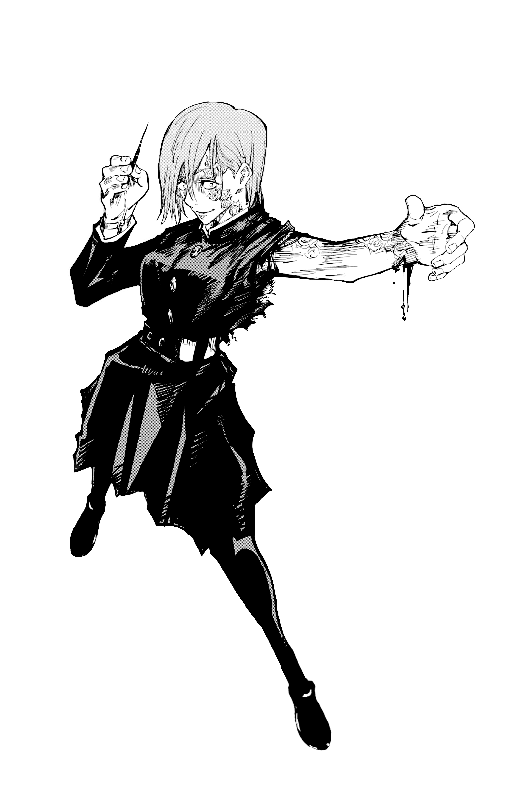

Nobara Kugisaki (Japanese: 釘崎 野薔薇, Hepburn: Kugisaki Nobara) is a fictional character in the manga series Jujutsu Kaisen created by Gege Akutami. A first-year student at Tokyo Jujutsu High, an academy to hone Cursed Techniques to fight against Cursed Spirits arising from negative emotions from humans, she is under the tutelage of honored one alongside Vessel and Ten shadows. She is a transfer student from Morioka whose hotheadedness and brashness contrast with the other first-year students' altruism and stoicism.
